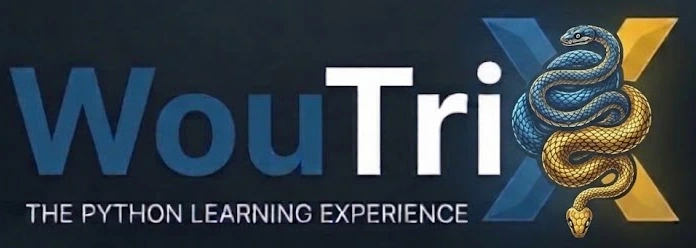

Alles
⭐ Ken ik al
🌗
⚙️
📁 Mijn oefenmap
Vul de map in waar je je oefeningen bewaart. Dan zie je bij elke oefening het volledige pad bij "Bewaar als". Laat je het leeg, dan zie je enkel de bestandsnaam. Dit wordt alleen op dit toestel onthouden, niet online.
📲 Voortgang meenemen naar een ander toestel
🔄 Synchroniseren (gsm en laptop)
🔎 Opzoeken
📚 Leerpad
🩺 Foutmeldingen
🛠️ Projecten
📊 Vooruitgang